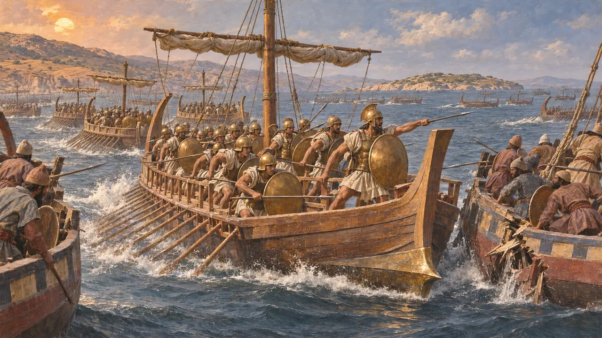
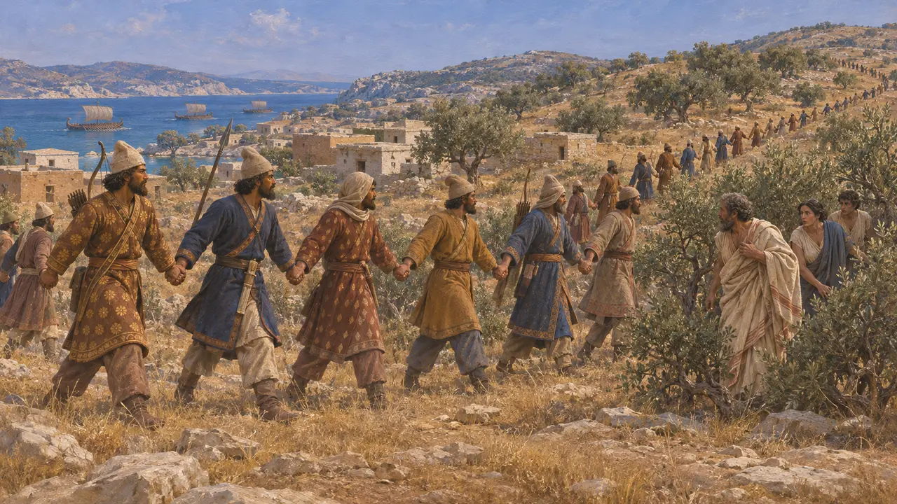
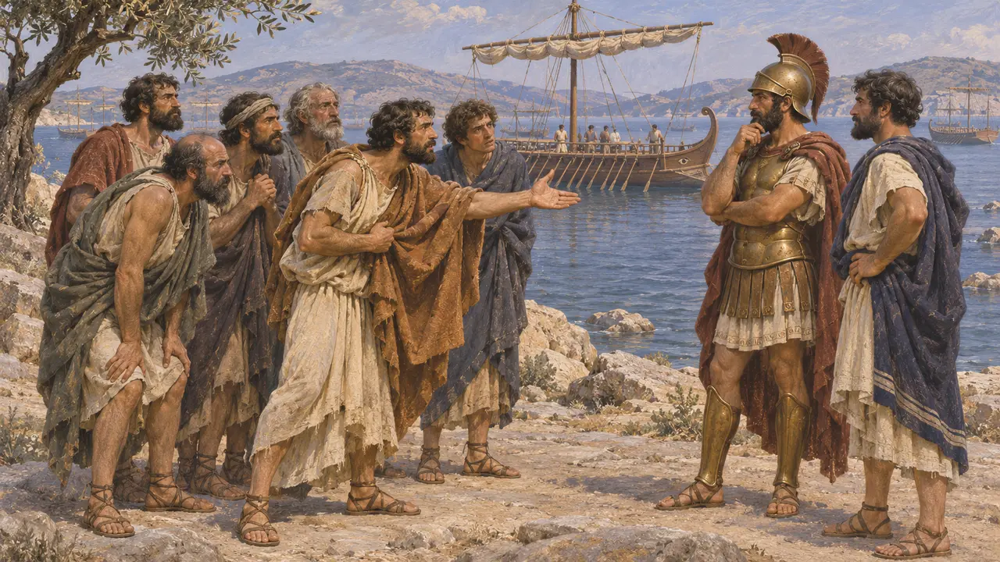
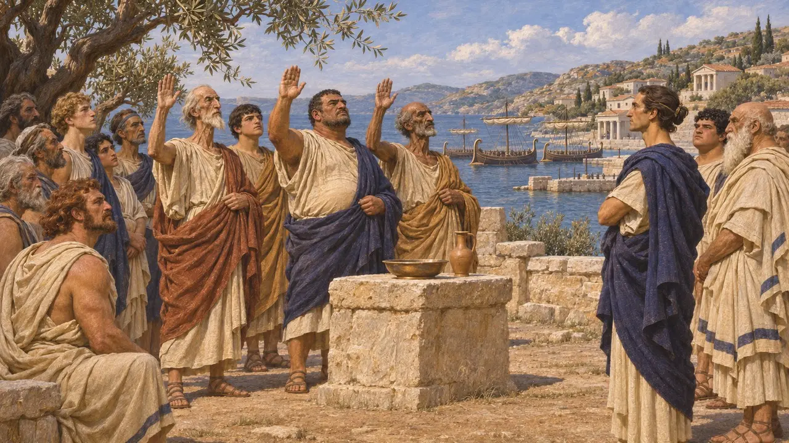
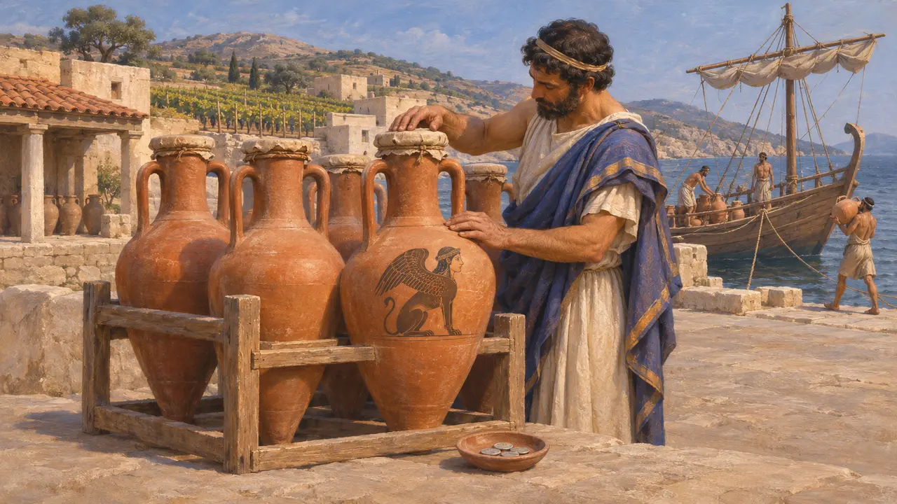

Quíos
Isla jonia cuyos cien barcos siguieron combatiendo en Lade, 494 a. e. c.
Quíos es una gran isla frente a la costa jonia, famosa por su vino. Se sumó a la Revuelta jonia, y en Lade, en 494, sus cien naves siguieron combatiendo después de que samios y lesbios huyeran. Los persas tomaron entonces la isla, y en 479 los quiotas se unieron a la alianza griega tras Mícala.
En el juego: Quíos aparece en los textos de Lade del nivel de Sardes, donde los quiotas siguen luchando, y en los comentarios sobre su vino.

Cien naves en Lade
Relato antiguoLos quiotas llevaron cien naves a Lade, cada una con cuarenta ciudadanos escogidos como infantería de marina. Heródoto cuenta que, cuando los demás huyeron, ellos siguieron combatiendo y rompieron la línea enemiga una y otra vez, hasta que perdieron la mayor parte de sus naves y los restantes escaparon a su patria.
Herodotus 6.8, 6.15-16

Tras la revuelta
Relato antiguoHistieo cayó sobre los quiotas que habían regresado a casa desde Lade y mató a muchos. Al año siguiente la flota persa tomó Quíos, Lesbos y Ténedos y barrió las islas, con los hombres tomados de la mano a lo largo de cada isla para sacar a la gente de sus escondites.
Herodotus 6.26-27, 6.31

El tirano Estratis
Relato antiguoEn 480 Quíos estaba gobernada para Persia por el tirano Estratis. Heródoto cuenta que seis quiotas que habían conspirado para matarlo huyeron a la flota griega y le suplicaron que navegara hacia Jonia; uno de ellos se llamaba Heródoto.
Herodotus 8.132


El vino de Quíos
En los documentosEl vino de Quíos figuraba entre los más apreciados del mundo griego, y sus ánforas, a menudo marcadas con una esfinge, aparecen desde el mar Negro hasta Egipto. Las monedas quiotas de la época muestran una esfinge sentada junto a un ánfora.
Head, Historia Numorum, Ionia: Chios
Fuentes
- Herodotus 6.8, 6.15-16, 6.26-27, 6.31, 8.132, 9.106
- C. M. Kraay, Archaic and Classical Greek Coins, 1976